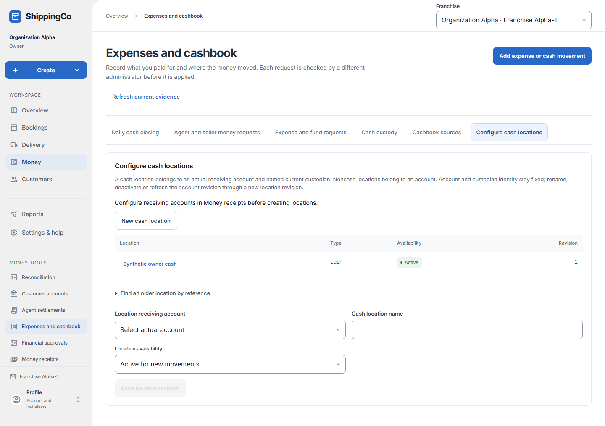

Cash locations
What this helps you do
- Name the accounts and custodians that hold your money.
Open this feature
- Money > Expenses and cashbook > Configure cash locations.
- Check the active branch first. Available actions depend on your role and the selected record.

Create a location
- Configure the receiving account in Money receipts first, then select New cash location here.
- Choose Location receiving account. For cash choose the Named cash custodian responsible for holding it. Enter a recognisable Cash location name and choose Location availability.
- Select Save location revision and check the list. Active locations can be used for new movements.
Inspect or retire
- Select a saved location or expand Find an older location by reference. Enter Cash location reference and choose Open location, including inactive.
- Revise the name or availability and save. Account and custodian are fixed after creation; use a new location for a different account or custodian.
- Inactive locations retain earlier history. Inactivation does not erase custody or money records.
Fields and when to use them
These fields belong to the actions above. Complete the fields for your selected action; optional filters may stay blank.
- Cash location reference: The saved reference used to open an older or inactive location. Use when shown for the selected action.
- Location receiving account: Select the existing receiving account; required on creation and fixed afterwards. Use when shown for the selected action.
- Named cash custodian: Select the current employee responsible for this cash location; fixed afterwards. Use when shown for the selected action.
- Cash location name: A clear name for this cash-holding location. Required when this field is shown.
- Location availability: Active permits new movements; inactive retains history. Use when shown for the selected action.
If you need to retry
- No records: check branch, account or customer and filters. Use Load more where offered before deciding a record is missing.
- Invalid or missing value: read the form message, correct the draft, then review amounts and references again.
- Uncertain save: use the offered retry for the same request. Do not create a second payment, return, expense or application to guess whether the first saved.
- Changed evidence or policy: refresh current records and review them before a new request. A saved report retains its captured figures; create another report for current results.
About this guide
Checked against the current screen code on 1 November 2026. This explains app behaviour, not tax or accounting advice. Buttons and records can differ by role.